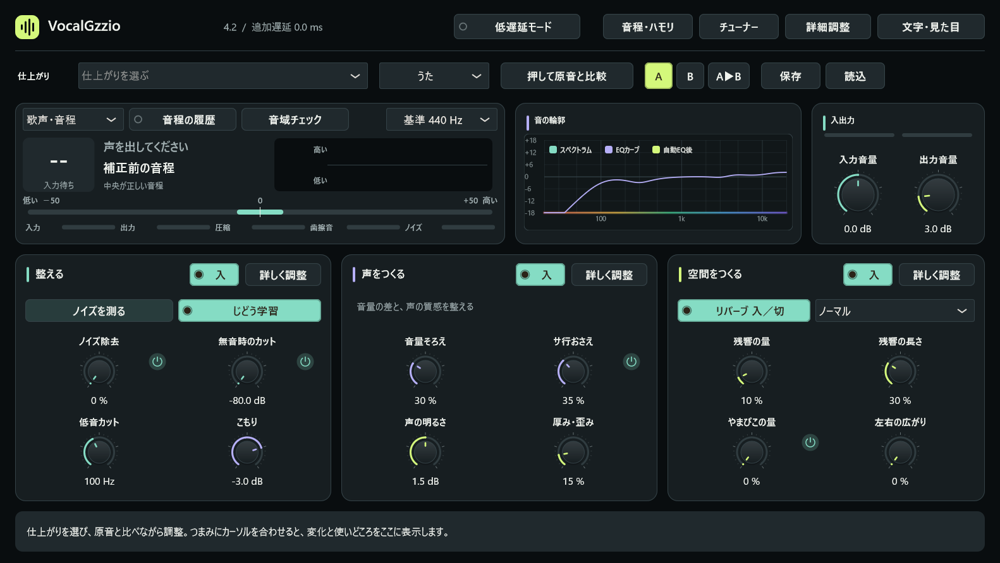

VocalGzzio 4.2
声をつくる。
演奏に集中する。
小さなつまみを探す時間から、音を聴く時間へ。
入力、声の質感、残響。全体を見渡しながら、欲しい仕上がりに近づける。

選ぶ理由のある６つの音
自然に整える、歌詞を前へ、丸く親密に。音色・強弱・余韻をまとめて変える「仕上がり」から出発します。
変化を、その場で確かめる
押している間だけ原音と比較。リバーブも独立して入／切できます。効果と使いどころを画面下に表示します。
弾く人にも、読みやすく
標準６弦のギターチューナーと大きな音程表示。文字と画面の大きさを調整でき、ブランド表示では英語にも切り替わります。
音の土台から、余韻まで。
ノイズ学習とノイズ除去、音量のばらつき、耳に当たる高音、声の明るさ。必要なところを整え、空間IRや通常のリバーブで余韻を足します。より細かな設定は詳細画面から操作できます。
| 仕上がり | 狙う変化 |
|---|---|
| 自然に整える | 抑揚を残し、軽く整える |
| 歌詞を前へ | こもりを引き、言葉の輪郭を出す |
| 丸く親密に | 硬い高音を丸く、近い響きへ |
| 太く力強く | 強弱をそろえ、密度と軽い歪みを加える |
| 語りをくっきり | 残響を切り、言葉を近く届ける |
| 広く響かせる | 長い余韻と薄いやまびこを足す |
使う前に知っておきたいこと
音程補正・ハモリは単独の歌声など、音程が１つの音源向けです。声とギターが混ざった入力を分離して補正する機能ではありません。音程処理には48kHzで約42.6ミリ秒の追加遅延があり、低遅延モードでは音程系を停止します。
空間IRは計算生成した残響データです。実在の部屋の録音ではありません。ノイズ除去や補正の適量は音源によって変わります。まず体験版で、ご自身の声や機材との相性をお確かめください。
配布と対応環境
Windows 10 / 11の64ビット版で、VST3と単体起動アプリを利用できます。Mac向けにはApple Silicon / Intel対応のVST3・AU・単体起動アプリを準備しています。現在の配布ファイル、署名・公証、確認済み環境は商品ページの記載をご覧ください。
製品版はBOOTHの購入履歴から取得できます。体験版には一定間隔の音量低下があります。既存の価格・販売条件は商品ページをご確認ください。